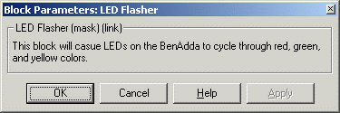

The Xilinx XtremeDSP LED Flasher block allows System Generator models
to use the tri-color LEDs on the BenADDA board when a model is prepared
for co-simulation. When the model is co-simulated, the LEDs will
cycle through red, green and yellow colors. The LEDs are driven by
the two most significant bits of 27-bit free running counter. To
see the LEDs cycle through the three colors, you should select a free running
clock during model simulation.
Block Parameters Dialog Box
The block parameters
dialog box can be invoked by double-clicking the icon in your Simulink
model.

XtremeDSP LED Flasher
block parameters dialog box.